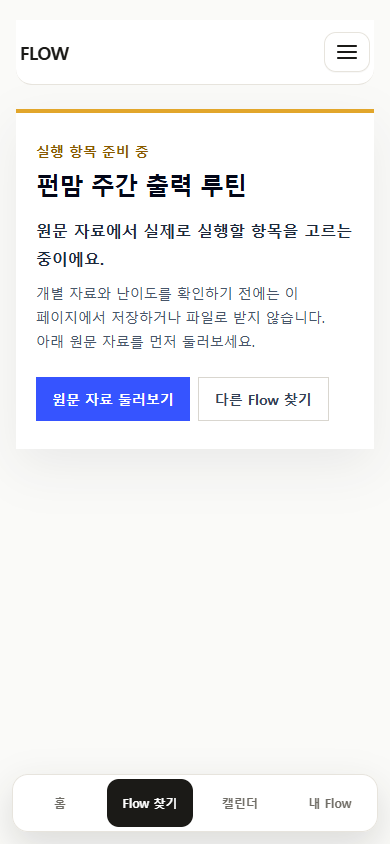
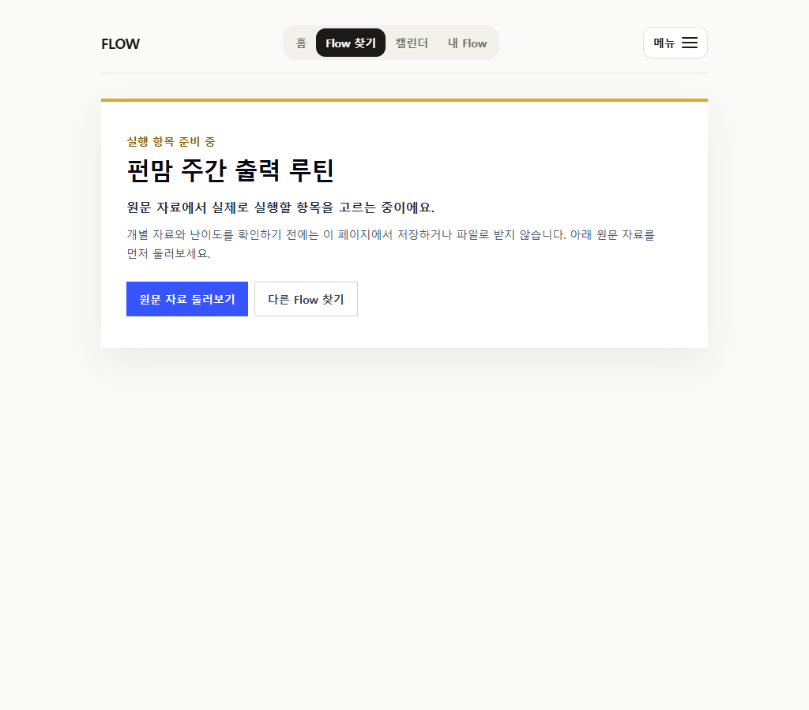
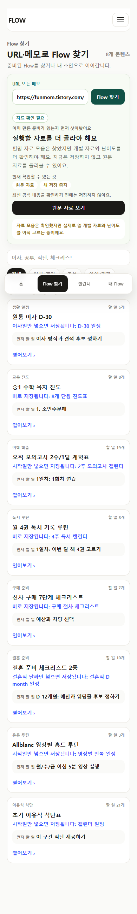
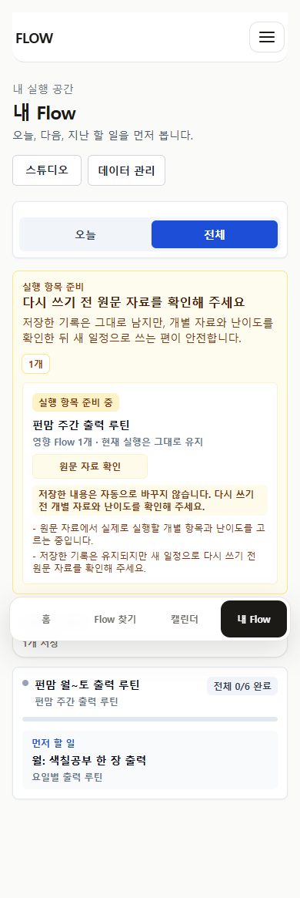
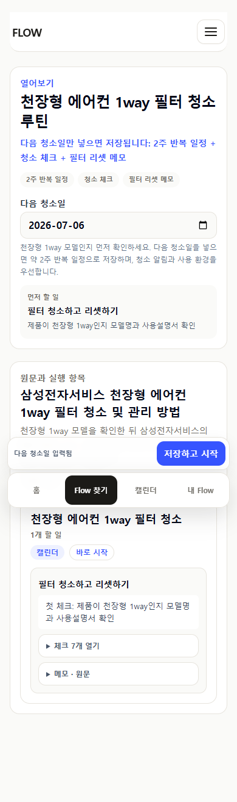
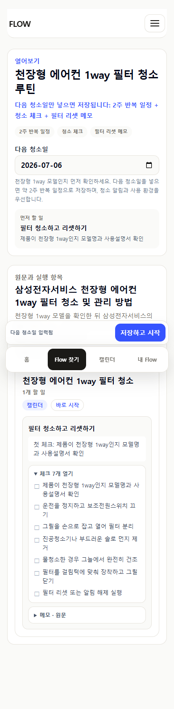
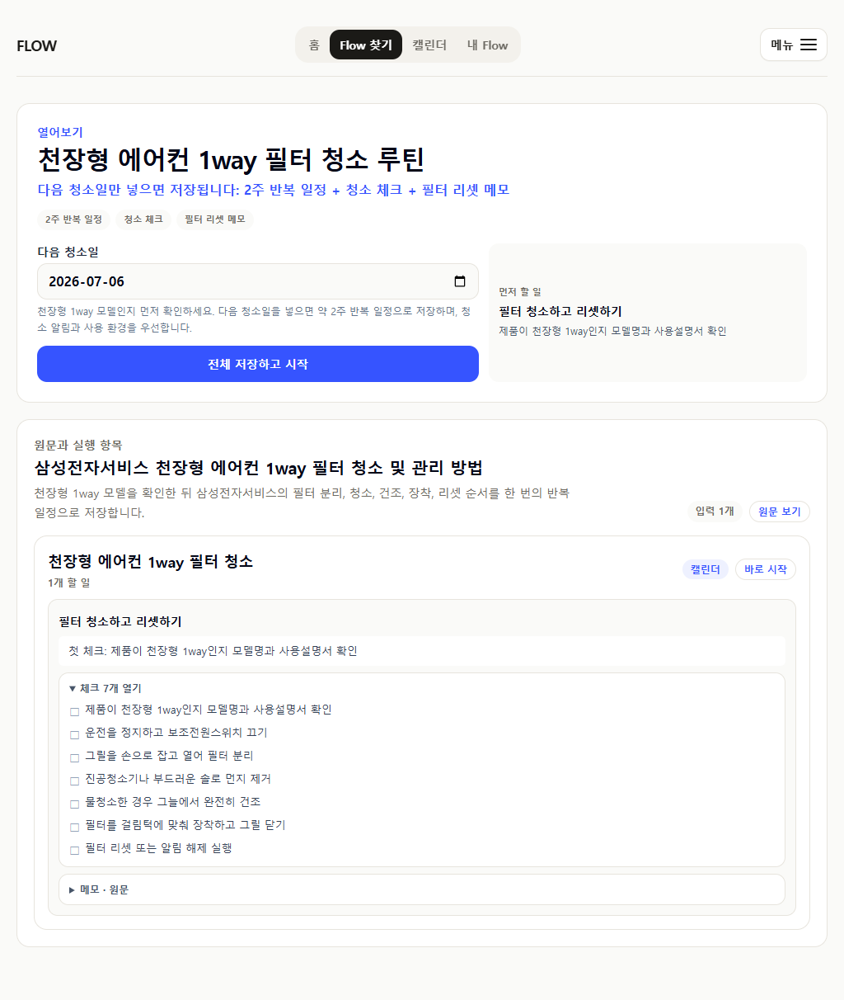

펀맘 주간 출력 루틴
사이트는 접근 가능하지만 최신 확인 게시물이 2021년이고, 카테고리 모음은 월~토 일정·10분 기준·아이별 난이도를 정의하지 않습니다.
- 새 저장·내보내기·URL hit 중지
- 직접 route와 원문 링크 유지
- 기존 저장 기록 유지, 비삭제 경고 제공
CURRENT SOURCE CHECK · 2026-07-12
펀맘은 broad category collection으로 보류하고, 삼성 천장형 1way 필터 안내는 현재 공식 범위 안에서 direct utility로 유지했습니다.
사이트는 접근 가능하지만 최신 확인 게시물이 2021년이고, 카테고리 모음은 월~토 일정·10분 기준·아이별 난이도를 정의하지 않습니다.
공식 안내는 약 2주 또는 필터 알림 시 청소를 지지합니다. 다만 모델별 방법이 다르므로 1way 모델·사용설명서 확인을 첫 체크로 고정했습니다.
FREQ=WEEKLY;INTERVAL=2 유지






펀맘은 exact worksheet article URL, 대상 연령·난이도, 링크·출력물 권리 경계를 확보하기 전에는 다시 실행 가능 상태로 올리지 않습니다. 에어컨은 다른 제조사나 2way·4way·벽걸이·스탠드형으로 범위를 넓히지 않습니다.